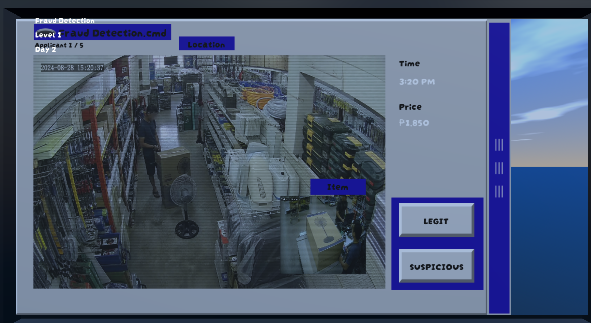

MODULE 01
Suspicious activity
Or a missing detail?
Review transactions, camera feeds, and customer profiles Decide what deserves a flag—and what deserves a second look
YOUR CALL
Request a playtest →Is the transaction suspicious, or just unfamiliar?